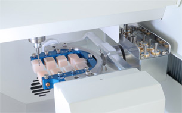
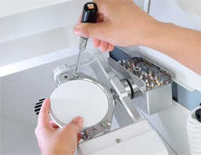
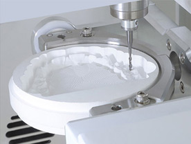
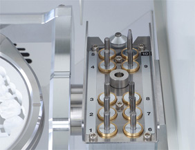
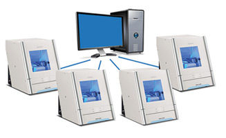
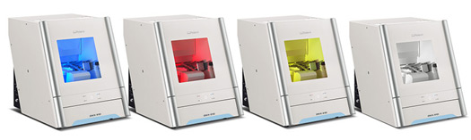
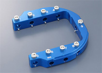

{kind=link}
{kind=link}
Фрезерный аппарат DWX-51D для CAD лабораторий разработан для интуитивного и точного изготовления зуботехнических реставраций, таких как колпачки, коронки и мостовидные конструкции, инлей и онлей, а также абатменты. Полностью автоматизированная система с широким набором функций, DWX-51D является идеальным выбором как для начинающих пользователей, так и для лабораторий, желающих увеличить объем производства. Roland DWX-51D лучший выбор для вашей CAD лаборатории.
Особенности DWX-51D
- Обработка по 5-ти осям
- Обрабатываемый материал: оксид циркония, воск, ПММА, композитные смолы, РЕЕК и гипс
- Автоматический сменщик инструмента на 10 позиций
- Адаптер для фиксации 9 pin-блоков
- Презиционный шарико-винтовой механизм
- Новый C-образный зажим для более точной установки
- Мощная помпа и антистатичный ионизатор для четкой калибровки и чистой рабочей зоны
- Устойчивое основание для надежного фрезерирования
- Цветовой LED индикатор состояния аппарата
- Встроенный блок для хранения и ухода за аппаратом
- Лучшая гарантий и пост-продажная поддержка в индустрии
- Сделано в Японии
ПЯТИОСЕВАЯ ФРЕЗЕРНАЯ ОБРАБОТКА
Фрезерный стоматологический станок DWX-51D имеет приводы с шарико-винтовыми парами, что дает надежную высокоточную фрезеровку. Станок может обрабатывать диски и pin-блоки по трем осям X, Y, Z, с вращением заготовки по оси A на ±360° и наклоном заготовки по оси B до ±30°.
C-ОБРАЗНЫЙ ЗАЖИМ ДЛЯ БЫСТРОЙ ФИКСАЦИИ ЗАГОТОВОК
Держатель для заготовок оборудован специальным зажимом, имеющим форму полумесяца. Благодаря уникальной конструкции зажима надежную фиксацию диска обеспечивают всего два винта. Для вкручивания винтов предусмотрена динамометрическая отвертка, контролирующая прилагаемое усилие. Система фиксации обеспечивает размещение диска в правильном положении, исключает его проворачивание и минимизирует возможные ошибки установки.
КОМФОРТ И ЧИСТОТА РАБОЧЕГО ПРОЦЕССА
Воздушный обдув и система автоматического сбора пыли с мощным пылеотсосом обеспечивают чистоту рабочей зоны станка. А встроенный ионизатор воздуха снимает статическое напряжение и предотвращает «налипание» стружки к стенкам рабочей зоны при обработке таких материалов, как ПММА (полиметилметакрилаты).
АВТОМАТИЧЕСКАЯ СМЕНА ИНСТРУМЕНТА С МАГАЗИНОМ НА 10 ФРЕЗ
Станок DWX-51D оснащен автоматической сменой инструмента с магазином на 10 фрез. Смена фрез в процессе фрезеровки происходит автоматически, без остановки рабочего процесса и без участия оператора.
АВТОМАТИЧЕСКАЯ СМЕНА ИНСТРУМЕНТА С МАГАЗИНОМ НА 10 ФРЕЗ
С целью увеличения эффективности использования зуботехнической лаборатории функциональные возможности DWX-51D позволяют создавать мультикастовые группы (один ко многим). Всего такая группа может состоять из четырех станков DWX-51D, подключенных к одному персональному компьютеру. Используя централизованное управление четырех станков с одного компьютера, можно увеличить производственный потенциал лаборатории, и в значительной степени снизить финансовые затраты на организацию всего рабочего процесса.
СВЕТОВАЯ ИНДИКАЦИЯ СОСТОЯНИЯ СТАНКА DWX-51D
Станок DWX-51D оснащен системой световой индикации. Каждому состоянию рабочего процесса соответствует свечение диодной подсветки определенного цвета. LED индикация рабочих режимов помогает оператору своевременно реагировать на возникновение нештатных ситуаций в процессе изготовления стоматологических реставраций. В дополнение к световому оповещению на зарегистрированный электронный адрес может высылаться отчет с детальным описанием возникшей ошибки.
9-ПИНОВЫЙ АДАПТЕР ВХОДИТ В КОМПЛЕКТ ПОСТАВКИ СТАНКА
В комплекте со станком DWX-51D поставляется специализированный девяти-пиновый адаптер, предназначенный для фиксации заготовок (в виде pin-блоков с хвостовиком). Конструкция адаптера предусматривает одновременную установку до 9-ти pin-блоков.